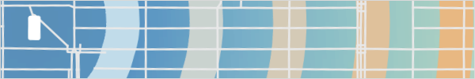
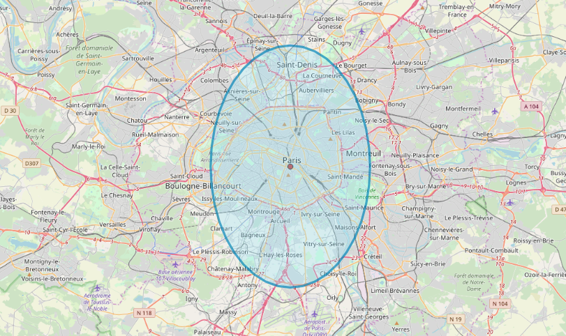
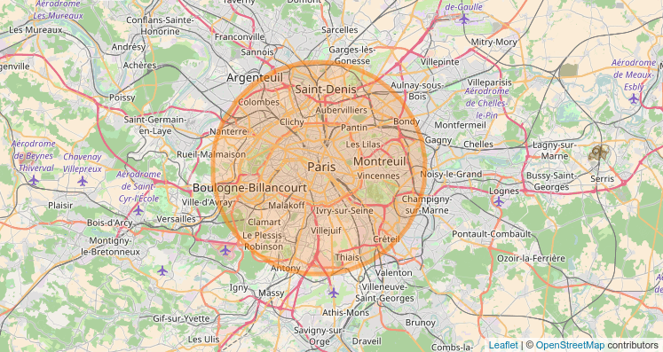

Equal-Area Buffers for Lon-Lat Coordinates
2017-04
One day, I decided to hard-code creating equal area circular buffers for a given lon/lat coordinate and set radius.This came out of frustration of existing web-mapping libraries which only used lon/lat coordinates as the basis for buffers, which resulted in distortions in far away from the equator. e.g. ...

This is due to most web-mapping libraries render the world using a Mercator projection.
The code below fixes this to create buffers that are circles (equal radius at all angles), rather than ellipses. This sis written in JavaScript so it can be used with web-mapping tech like Leaflet or OpenLayers.

Details:
First we need to setup functions for converting radians to degrees, and from degrees to radians. JavaScript only worked in radians for me, not degrees.
// convert radians to degrees
function to_deg(radians) {
return radians * 180 / Math.PI;
};
// convert degrees to radians
function to_radians(degrees) {
return degrees * Math.PI / 180;
};Since the Earth is not a perfect sphere, we need a function to compute the radius for specific latitude.
function radius_at_lat(latitude) {
r_a = 6378137.0 // equitorial radius (in m)
r_b = 6356752.3 // polar radius (in m)
var radius = Math.sqrt(
(r_a * r_a * Math.cos(latitude) * r_a * r_a * Math.cos(latitude) + r_b * r_b * Math.sin(latitude) * r_b * r_b * Math.sin(latitude))
/
(r_a * Math.cos(latitude) * r_a * Math.cos(latitude) + r_b * Math.sin(latitude) * r_b * Math.sin(latitude))
);
return radius
};The Haversine formula computes great circle distances and the associated bearing between two points on the Earth.
Re-working this formula we can find the coordinates of a point given inputs of another point, bearing, and distance.
function destination_point(degrees_lat, degrees_long, distance, angle_circle_deg) {
var bearing = to_radians(Number(angle_circle_deg)); //
var dr_ratio = Number(radius / radius_at_lat(degrees_lat)); // ratio of distance to
var i_lat = to_radians(degrees_lat); // convert input to rad
var i_lon = to_radians(degrees_long); // convert input to rad
var d_lat = Math.asin(
Math.sin(i_lat) * Math.cos(dr_ratio) +
Math.cos(i_lat) * Math.sin(dr_ratio) * Math.cos(bearing));
var d_lon = i_lon + Math.atan2(
Math.sin(bearing) * Math.sin(dr_ratio) * Math.cos(i_lat),
Math.cos(dr_ratio) - Math.sin(i_lat) * Math.sin(d_lat));
// convert to long 180 to -180
d_lon = (d_lon + 3 * Math.PI) % (2 * Math.PI) - Math.PI;
return [to_deg(d_lon),to_deg(d_lat)];
};Finally, we loop the above calculation for a given distance and set of bearings, and then output the result into a `geojson object for easy display on a web map.
radius is the radius in m for the circle
edge_points is an integer of the number of points that make up the circle. The more points, the more "smooth" the circle.
circle_centre_point is an array of [lon,lat]
function hopeful_circle (circle_centre_point, radius, edge_points) {
//
circle_buf_coords = [];
// first point because geojson needs to close
circle_buf_coords.push(destination_point(circle_centre_point[1],circle_centre_point[0],radius,0))
// looping angles in a circle
inc = 360 / edge_points
start_d = inc
for (x = start_d; x <= 360; x += inc) {
hc = destination_point(circle_centre_point[1],circle_centre_point[0],radius,x);
circle_buf_coords.push(hc);
}
// add to array
circle_array = [];
circle_array.push(circle_buf_coords);
// add to a geojson object
var circle_geojson = {
"type": "FeatureCollection",
"features": [
{
"type": "Feature",
"properties": {},
"geometry": {
"type": "Polygon",
"coordinates": circle_array
}
}
]
}
// export
return circle_geojson